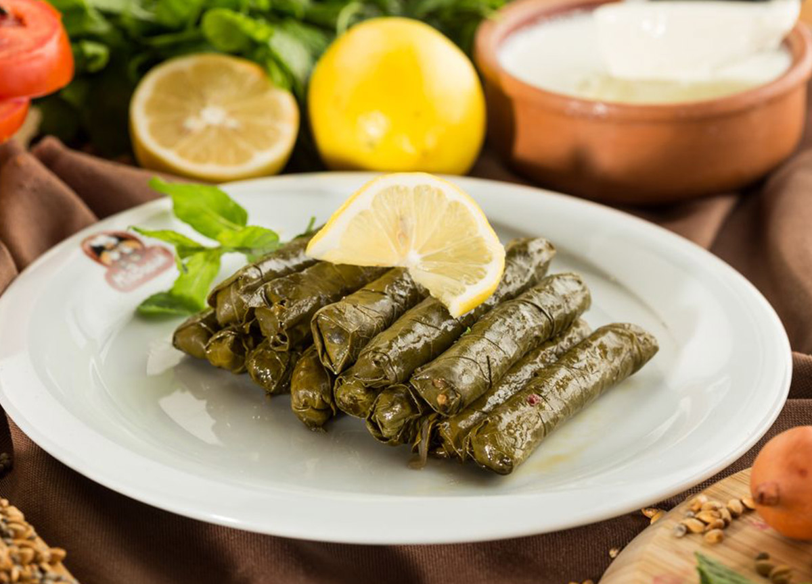

Sarma Recipe

Stuffed grape leaves with olive oil one of the indispensable flavors of Turkish, is at the top of Turkish cuisine and Turkish menus. It is the most popular dish prepared especially for special occasion and special guests. Stuffed grape leaves decorate our table with its appearence and taste and a special meal is loved by almost everyone in Turkey. The reason it is so special is that its preparation takes time and requires manual dexterity. The history of this dish , which is mostly known as native to Aegean cuisine , is based on Ottoman cuisine.
Ingredients
- 400 gram grape leaves
- 225 gram rice
- 1 dessert spoon tomato paste
- 1/2 cup olive oil
- 2 teaspoon salt
- 2 teaspoon ground black pepper
- 1 teaspoon dry mint
- 1 lemon
- 1 cup water
Directions
Preparation of Filling Ingredients
- Heat the olive oil. Then , dice the onion and brown it in oil for 3 -4minutes.
- Add the tomato past and brown 2 more minutes. next, add the rice .lastly , add the spices and mix them all . (you can add various spices if desired.)
Preparation of Leaves
- Firstly ,put the water in the pot and boil it.
- Add the leaves in the boil water and boil for 5 minutes.
- Then ,take the leaves out of the pot with the help of a strainer.
The Construction Phase
- After preparation of the leaves and filling ingredients , firstly spread the leaves on the kitchen bench .
- Secondly ,put a teaspoon of the filling ingredients into each leaf and make the filling ingredients into a thinline. Then , fold two edges of the leaf into it and roll it up tightly.
- Thirdly, cover the bottom of the pot with some grape leaves and put the stuffed grape leaves regularly in the pot . Then , slice the lemon and add on the stuffed grape leaves.
- Put a plate on them for the leaves do not open.
- Lastly , add a glass of water and a cup of olive oil and cook for about 40 minutes on low heat.